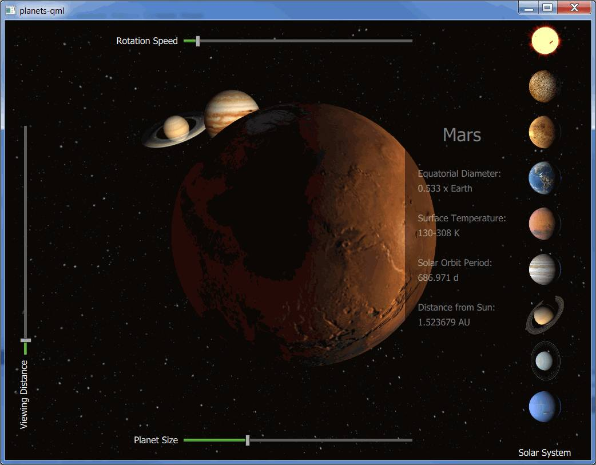

Qt 3D: Planets QML Example
Demonstrates combining Qt 3D rendering and Qt Quick 2 elements.

Planets demonstrates how to implement an application that combines the use of Qt 3D rendering with Qt Quick 2D elements. The example shows the eight planets of our Solar System with the Sun.
Planet texture maps are Copyright (c) by James Hastings-Trew http://planetpixelemporium.com/planets.html used with permission.
The planets are rotating around the Sun based on their orbit at a given time. The rotation starts at 2000 Jan 0.0 UT. The planet positions are calculated based on the formulas found here: http://www.stjarnhimlen.se/comp/ppcomp.html and http://www.davidcolarusso.com/astro/.
Running the Example
To run the example from Qt Creator, open the Welcome mode and select the example from Examples. For more information, visit Building and Running an Example.
Qt Quick 2D Implementation
The Qt Quick Implementation in planets-qml/PlanetsMain.qml of the example renders the 3D content using the Scene3D type.
Scene3D { anchors.fill: parent aspects: ["render", "logic", "input"] SolarSystem { id: solarsystem } }
The planet related information is stored into a ListModel. The selection buttons for the planets and the information sheet are created based on the model. The 2D elements, selection buttons and sliders, are implemented in planets-qml/PlanetsMain.qml.
The selection buttons change the focusedPlanet property of the mainview. As the property changes, the planet information is updated, and the camera is animated to the new position.
onFocusedPlanetChanged: { if (focusedPlanet == 100) { info.opacity = 0 updatePlanetInfo() } else { updatePlanetInfo() info.opacity = 1 } solarsystem.changePlanetFocus(oldPlanet, focusedPlanet) oldPlanet = focusedPlanet }
The camera position and the camera look at point are updated based on values that are animated in planets-qml/SolarSystem.qml, triggered from the changePlanetFocus() function.
QQ2.NumberAnimation { id: lookAtOffsetAnimation target: sceneRoot properties: "xLookAtOffset, yLookAtOffset, zLookAtOffset" to: 0 easing.type: Easing.InOutQuint duration: 1250 } QQ2.NumberAnimation { id: cameraOffsetAnimation target: sceneRoot properties: "xCameraOffset, yCameraOffset, zCameraOffset" to: 0 easing.type: Easing.InOutQuint duration: 2500 }
The sliders are used to adjust the rotation speed, the planet size, and the viewing distance. When a slider value changes, a JavaScript function in planets-qml/SolarSystem.qml is called to adjust the given property. For example, changing the value of the Viewing Distance slider calls the changeCameraDistance() method.
onValueChanged: solarsystem.changeCameraDistance(value)
Qt 3D Implementation
The main part of the implementation, including the movement and rotation maths for the planets, is done in planets-qml/SolarSystem.qml.
First, a Camera, a Light, and a Configuration are added, followed by Effects for the planet Materials, and finally the planets themselves. For example, Earth is constructed as follows:
Entity { id: earthEntity Planet { id: earth tilt: planetData[Planets.EARTH].tilt } PlanetMaterial { id: materialEarth effect: effectDSB ambientLight: ambientStrengthPlanet diffuseMap: "qrc:/images/solarsystemscope/earthmap2k.jpg" specularMap: "qrc:/images/solarsystemscope/earthspec2k.jpg" normalMap: "qrc:/images/solarsystemscope/earthnormal2k.jpg" shininess: shininessSpecularMap } property Transform transformEarth: Transform { matrix: { var m = Qt.matrix4x4() m.translate(Qt.vector3d(earth.x, earth.y, earth.z)) m.rotate(earth.tilt, tiltAxis) m.rotate(earth.roll, rollAxis) m.scale(earth.r) return m } } components: [ earth, materialEarth, transformEarth ] }
Planet data, which is needed for the movement and rotation calculations, among other things, is constructed with JavaScript in planets-qml/planets.js by calling loadPlanetData() as the component completes. Other initializations, such as inserting the planets into an array for easier handling, calculating the ring radii for Saturn and Uranus rings, and setting the default scale, speed, and camera offset, are done as well:
QQ2.Component.onCompleted: { planetData = Planets.loadPlanetData() // Push in the correct order planets.push(sun) planets.push(mercury) planets.push(venus) planets.push(earth) planets.push(mars) planets.push(jupiter) planets.push(saturn) planets.push(uranus) planets.push(neptune) planets.push(moon) // TODO: Once support for creating meshes from arrays is implemented take these into use //saturnRing.makeRing() //uranusRing.makeRing() saturnRingOuterRadius = planetData[Planets.SATURN].radius + Planets.saturnOuterRadius saturnRingInnerRadius = planetData[Planets.SATURN].radius + 0.006630 uranusRingOuterRadius = planetData[Planets.URANUS].radius + Planets.uranusOuterRadius uranusRingInnerRadius = planetData[Planets.URANUS].radius + 0.002 ready = true changeScale(1200) changeSpeed(0.2) setLookAtOffset(Planets.SUN) }
The scene is animated by calling the animate() function. That is also the place where the time is advanced, and the new positions for all of the planets are calculated. The planets are rotated in the positionPlanet() function based on their axial tilt and their sidereal rotation period. Finally, the new camera position is calculated in the updateCamera() function.
function animate(focusedPlanet) { if (!ready) return advanceTime(focusedPlanet) for (var i = 0; i <= Planets.NUM_SELECTABLE_PLANETS; i++) positionPlanet(i) updateCamera(focusedPlanet) }